NQ=F 1m 破翻回踩 MA20
只做日盤 09:30–15:45 ET。破底 → 收復粉紅 MA20（約 20 分鐘）→ 離開後回踩進場。停損在破底下方，目標 1.5R；持有滿 60 根若收破 MA20 出場。進場若貼著下彎的 5m MA60（40 點內），或夾在下彎空頭排列的 5m MA20/MA30 蓋頭底下（45 點內），則略過。 每筆附進場當下五分 K 對照。
30d · 2026-07-27 11:39 → 2026-08-25 11:28 ET · bars=28620
筆數10
勝率80.0%
總點數+569.2
勝/負8/2
QA 10筆 +569.2
漏斗：破底 736 → 深度夠 127 → 收復MA20 127 → 回踩 59 → 進場 10（沒離開 4 · 沒收復 0 · 沒守住 10 · 風險 2 · 貼下彎5mMA60 5 · 貼下彎5mMA20/30蓋頭 2 · 時段 40）
target1m回踩MA20QA5m對照
entry 27679.25 （回踩 1m MA20 27668.76）
stop 27593.50 (−85.8 pts，破底下方）
target 27807.88 (1.5R)
exit 27807.88 target
破底 07-28 10:16 low 27603.50 / 2h低 27641.75
收復 10:23 → 回踩 10:34
MA5 27696.9 / MA10 27694.2 / MA20 27668.8 / MA60 27710.2
5m MA20 27829.9 下彎 -92.8 （進場 − 5mMA20 = -150.7）
5m MA30 27880.8 下彎 -44.0 （進場 − 5mMA30 = -201.5）
5m MA60 27907.2 下彎 -31.6 （進場 − 5mMA60 = -227.9）
1m K
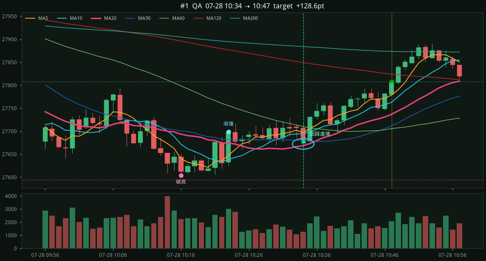
進場當下 5分K（粉紅 = 5m MA20）
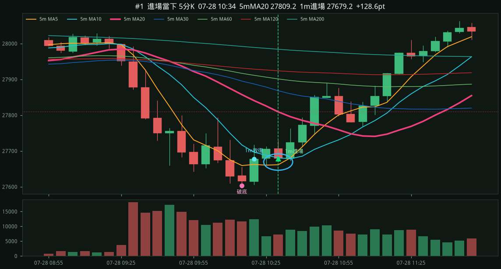
target1m回踩MA20QA5m對照
entry 27512.25 （回踩 1m MA20 27508.19）
stop 27399.25 (−113.0 pts，破底下方）
target 27681.75 (1.5R)
exit 27681.75 target
破底 07-29 12:15 low 27409.25 / 2h低 27510.00
收復 12:20 → 回踩 12:35
MA5 27539.4 / MA10 27544.3 / MA20 27508.2 / MA60 27504.6
5m MA20 27535.7 下彎 -24.4 （進場 − 5mMA20 = -23.4）
5m MA30 27559.8 下彎 -63.6 （進場 − 5mMA30 = -47.6）
5m MA60 27730.3 下彎 -50.8 （進場 − 5mMA60 = -218.1）
1m K
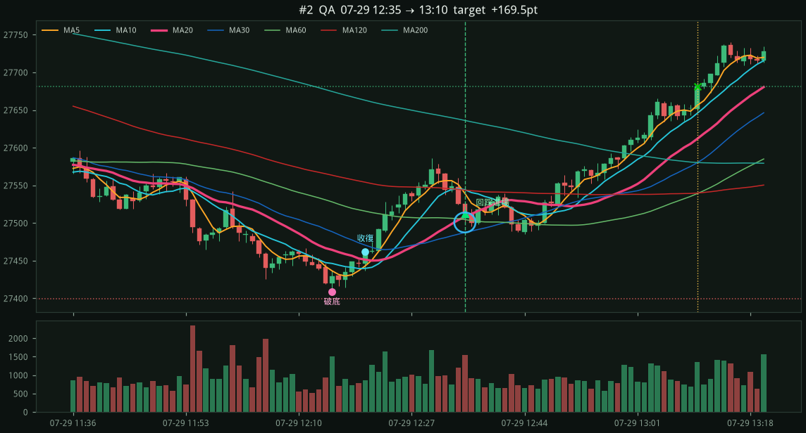
進場當下 5分K（粉紅 = 5m MA20）
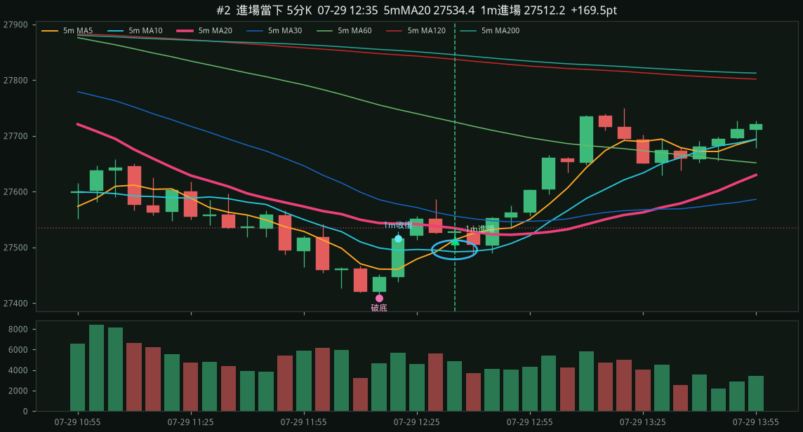
ma201m回踩MA20QA5m對照
entry 29795.25 （回踩 1m MA20 29781.59）
stop 29692.00 (−103.2 pts，破底下方）
target 29950.12 (1.5R)
exit 29756.75 ma20
破底 08-05 12:12 low 29702.00 / 2h低 29763.50
收復 12:16 → 回踩 12:34
MA5 29795.7 / MA10 29802.4 / MA20 29781.6 / MA60 29777.2
5m MA20 29803.8 下彎 -35.9 （進場 − 5mMA20 = -8.6）
5m MA30 29844.7 下彎 -49.4 （進場 − 5mMA30 = -49.4）
5m MA60 29893.8 下彎 -14.1 （進場 − 5mMA60 = -98.5）
1m K
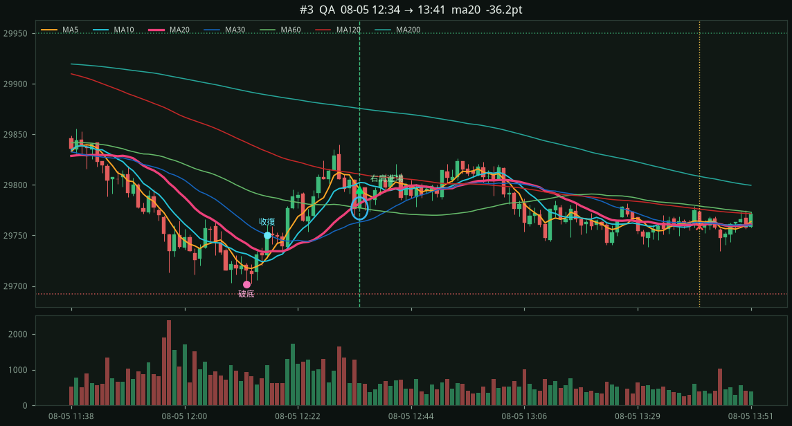
進場當下 5分K（粉紅 = 5m MA20）
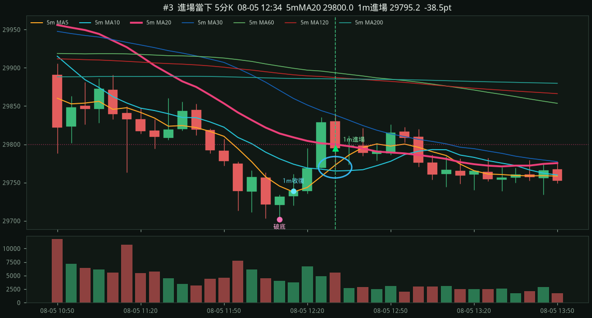
ma201m回踩MA20QA5m對照
entry 29542.00 （回踩 1m MA20 29535.50）
stop 29438.50 (−103.5 pts，破底下方）
target 29697.25 (1.5R)
exit 29521.00 ma20
破底 08-06 12:24 low 29448.50 / 2h低 29478.25
收復 12:30 → 回踩 13:07
MA5 29553.3 / MA10 29554.2 / MA20 29535.5 / MA60 29505.6
5m MA20 29529.5 下彎 -32.7 （進場 − 5mMA20 = +12.5）
5m MA30 29558.9 下彎 -18.1 （進場 − 5mMA30 = -16.9）
5m MA60 29510.0 上彎 +6.2 （進場 − 5mMA60 = +32.0）
1m K
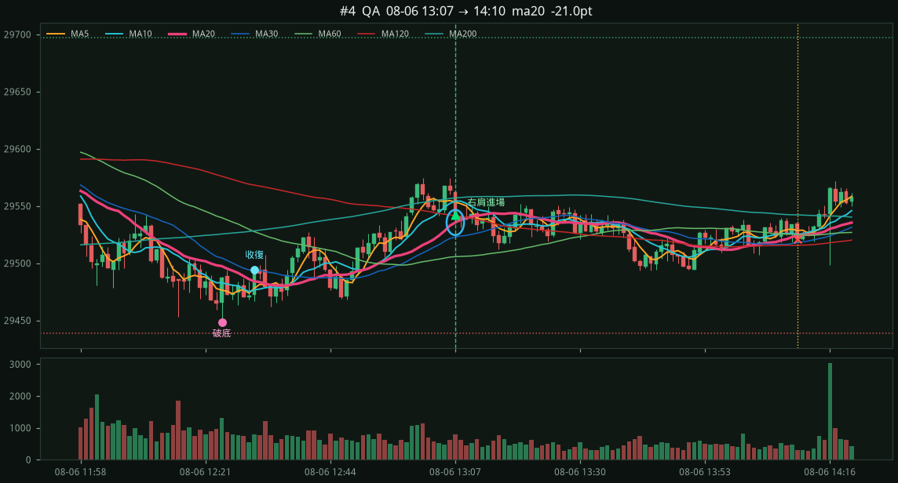
進場當下 5分K（粉紅 = 5m MA20）
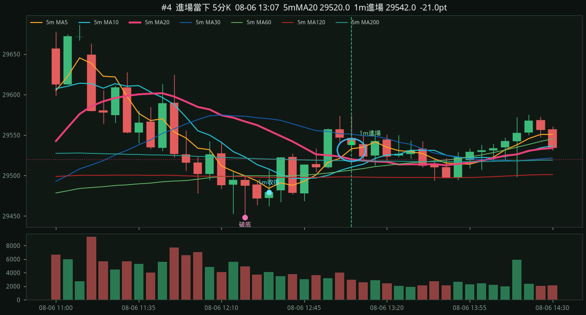
ma201m回踩MA20QA5m對照
entry 29732.25 （回踩 1m MA20 29712.12）
stop 29554.50 (−177.8 pts，破底下方）
target 29998.88 (1.5R)
exit 29800.00 ma20
破底 08-07 10:12 low 29564.50 / 2h低 29611.00
收復 10:16 → 回踩 10:33
MA5 29742.7 / MA10 29745.0 / MA20 29712.1 / MA60 29710.3
5m MA20 29736.6 下彎 -25.1 （進場 − 5mMA20 = -4.4）
5m MA30 29731.5 上彎 +6.4 （進場 − 5mMA30 = +0.8）
5m MA60 29681.5 上彎 +4.7 （進場 − 5mMA60 = +50.8）
1m K
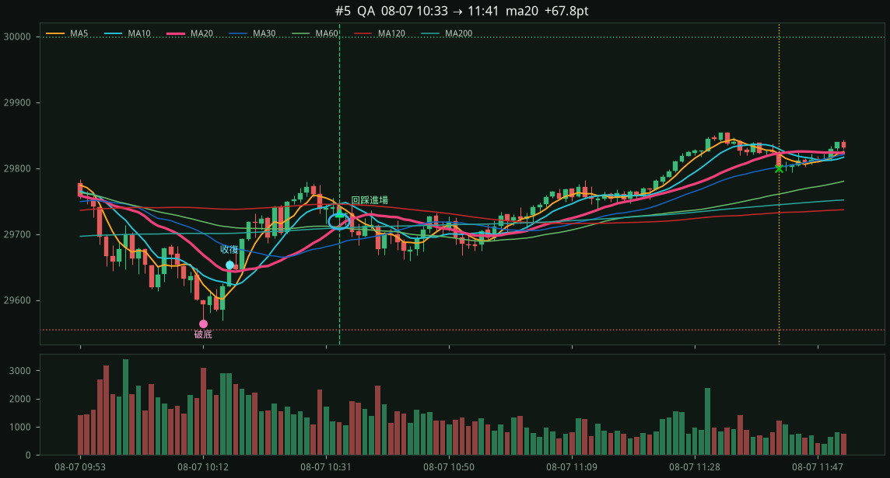
進場當下 5分K（粉紅 = 5m MA20）
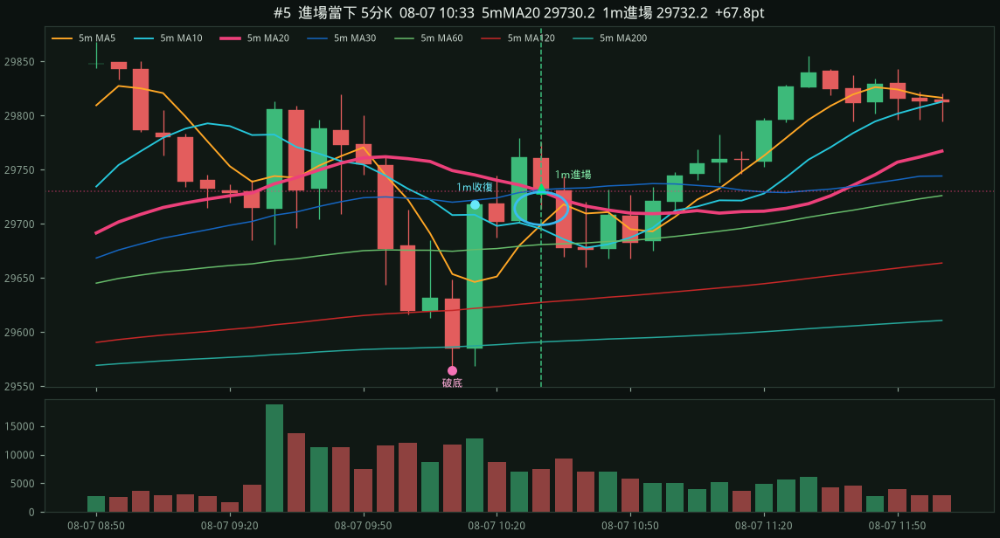
ma201m回踩MA20QA5m對照
entry 29793.25 （回踩 1m MA20 29784.91）
stop 29666.50 (−126.8 pts，破底下方）
target 29983.38 (1.5R)
exit 29817.25 ma20
破底 08-07 14:47 low 29676.50 / 2h低 29691.00
收復 14:49 → 回踩 15:19
MA5 29808.2 / MA10 29806.3 / MA20 29784.9 / MA60 29730.9
5m MA20 29734.7 上彎 +2.5 （進場 − 5mMA20 = +58.5）
5m MA30 29739.9 上彎 +3.0 （進場 − 5mMA30 = +53.4）
5m MA60 29752.7 上彎 +6.9 （進場 − 5mMA60 = +40.5）
1m K
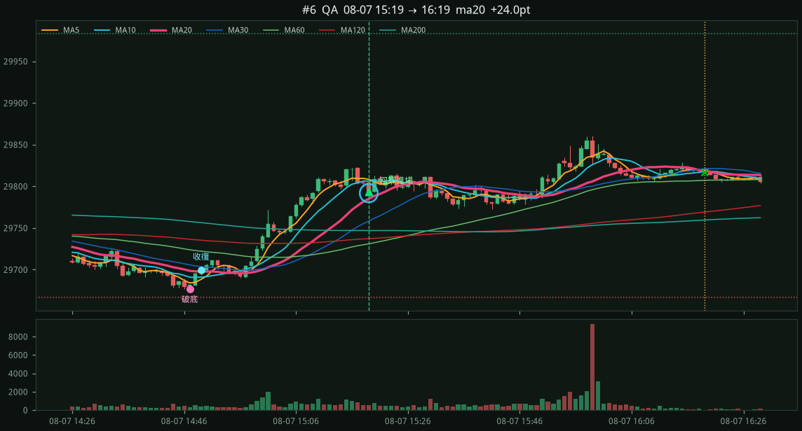
進場當下 5分K（粉紅 = 5m MA20）
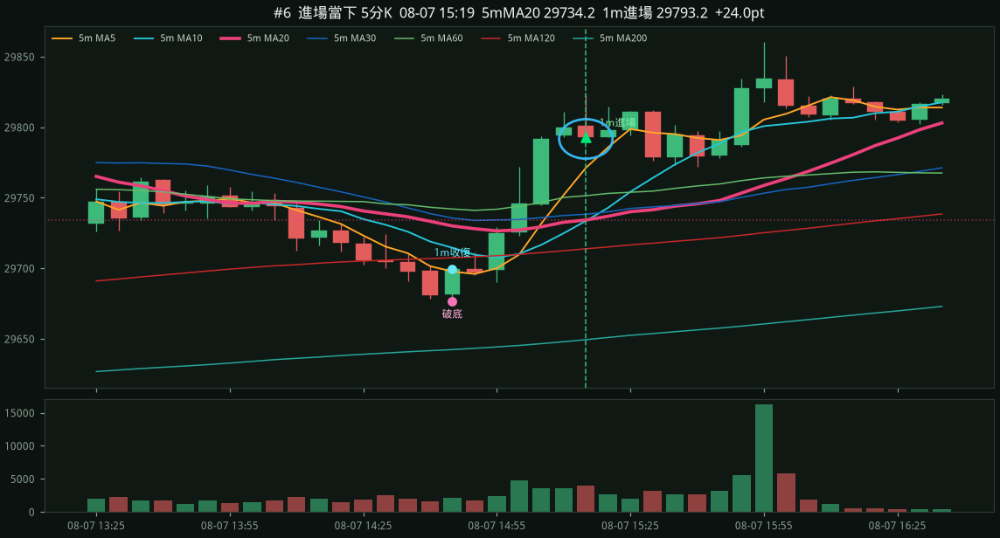
target1m回踩MA20QA5m對照
entry 30146.75 （回踩 1m MA20 30145.85）
stop 30094.00 (−52.8 pts，破底下方）
target 30225.88 (1.5R)
exit 30225.88 target
破底 08-13 11:59 low 30104.00 / 2h低 30115.00
收復 12:01 → 回踩 12:13
MA5 30158.2 / MA10 30160.3 / MA20 30145.8 / MA60 30166.4
5m MA20 30191.1 下彎 -18.1 （進場 − 5mMA20 = -44.3）
5m MA30 30185.9 上彎 +40.4 （進場 − 5mMA30 = -39.1）
5m MA60 30032.5 上彎 +26.5 （進場 − 5mMA60 = +114.3）
1m K
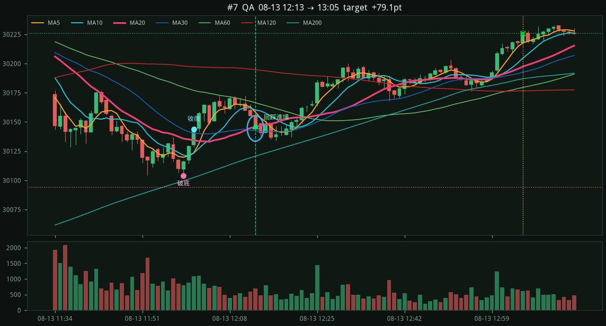
進場當下 5分K（粉紅 = 5m MA20）
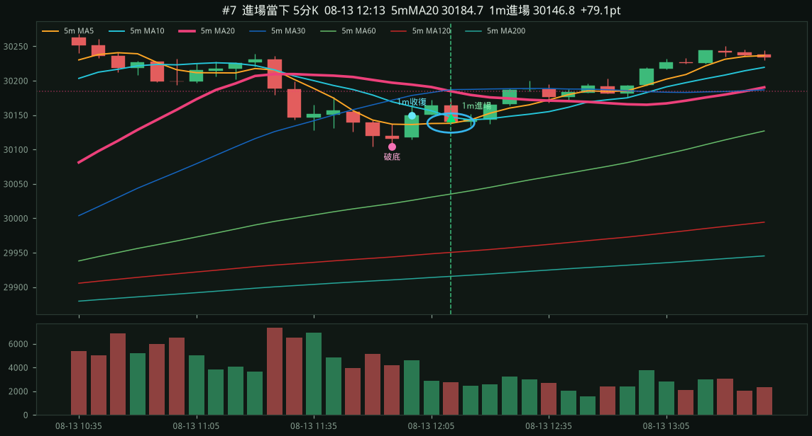
ma201m回踩MA20QA5m對照
entry 29581.50 （回踩 1m MA20 29573.15）
stop 29504.00 (−77.5 pts，破底下方）
target 29697.75 (1.5R)
exit 29621.75 ma20
破底 08-18 11:10 low 29514.00 / 2h低 29526.00
收復 11:15 → 回踩 11:35
MA5 29589.7 / MA10 29589.3 / MA20 29573.2 / MA60 29580.5
5m MA20 29602.6 下彎 -38.8 （進場 − 5mMA20 = -21.1）
5m MA30 29633.0 下彎 -28.3 （進場 − 5mMA30 = -51.5）
5m MA60 29685.4 下彎 -15.9 （進場 − 5mMA60 = -103.9）
1m K
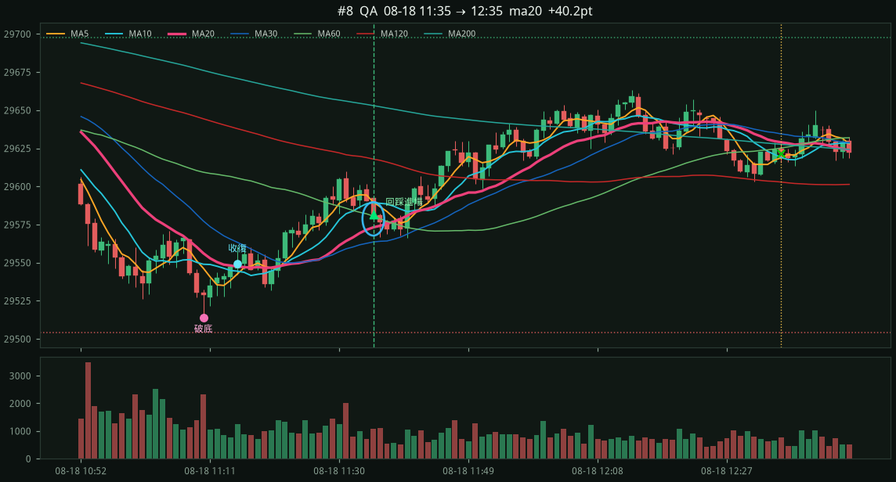
進場當下 5分K（粉紅 = 5m MA20）
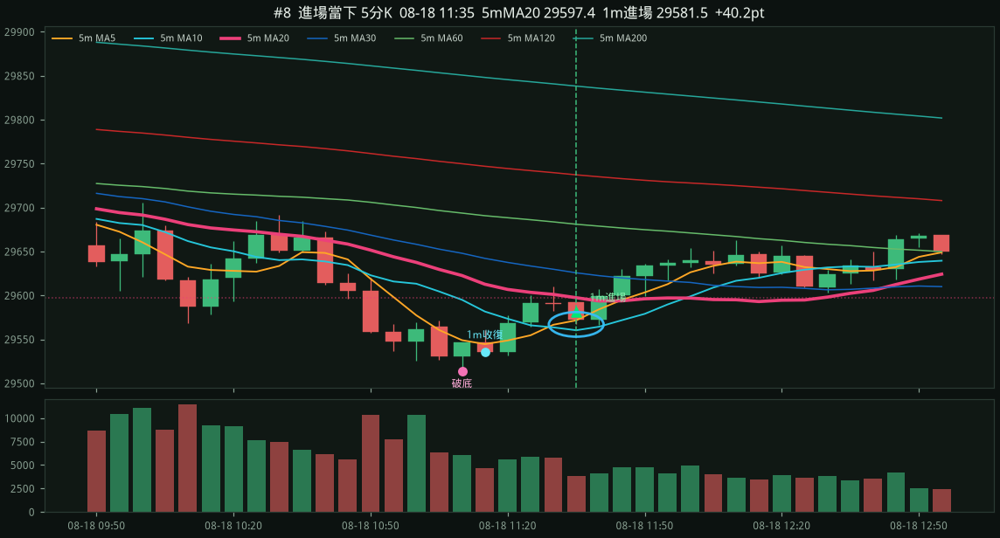
ma201m回踩MA20QA5m對照
entry 29357.50 （回踩 1m MA20 29337.25）
stop 29210.00 (−147.5 pts，破底下方）
target 29578.75 (1.5R)
exit 29402.75 ma20
破底 08-21 10:21 low 29220.00 / 2h低 29239.75
收復 10:25 → 回踩 11:11
MA5 29355.8 / MA10 29353.7 / MA20 29337.2 / MA60 29299.4
5m MA20 29311.3 下彎 -38.1 （進場 − 5mMA20 = +46.2）
5m MA30 29368.2 下彎 -34.4 （進場 − 5mMA30 = -10.7）
5m MA60 29430.9 下彎 -16.0 （進場 − 5mMA60 = -73.4）
1m K
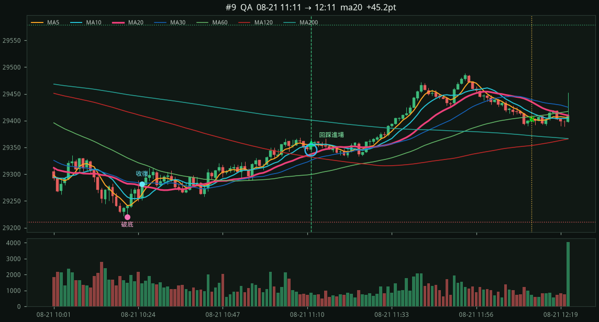
進場當下 5分K（粉紅 = 5m MA20）
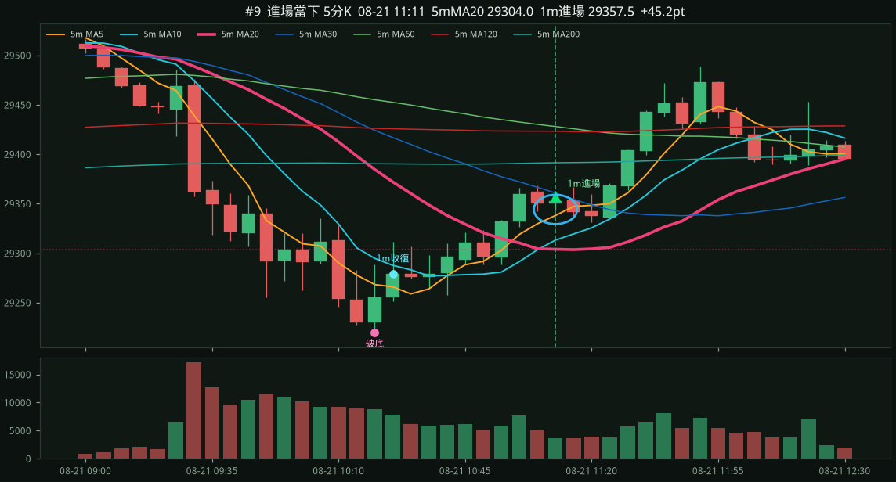
ma201m回踩MA20QA5m對照
entry 29094.25 （回踩 1m MA20 29083.81）
stop 28936.75 (−157.5 pts，破底下方）
target 29330.50 (1.5R)
exit 29168.50 ma20
破底 08-24 09:53 low 28946.75 / 2h低 29171.50
收復 09:58 → 回踩 10:50
MA5 29099.9 / MA10 29094.7 / MA20 29083.8 / MA60 29024.9
5m MA20 29064.8 下彎 -45.8 （進場 − 5mMA20 = +29.5）
5m MA30 29115.0 下彎 -32.9 （進場 − 5mMA30 = -20.8）
5m MA60 29164.4 下彎 -16.6 （進場 − 5mMA60 = -70.2）
1m K
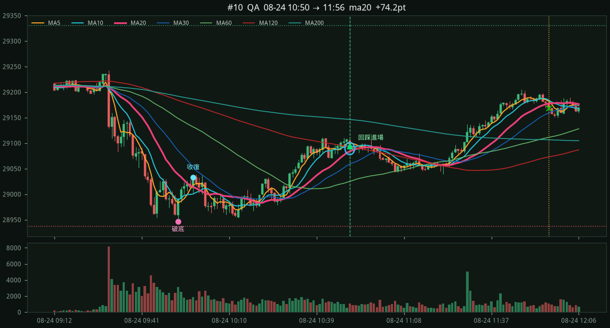
進場當下 5分K（粉紅 = 5m MA20）
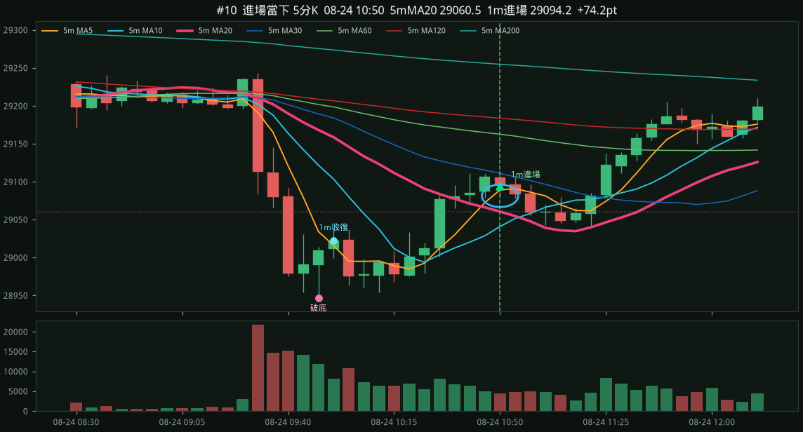